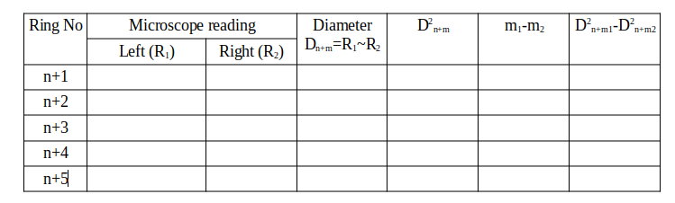

Newton's Ring |
|
x (in cm)
|
|
Distance between mirror and lens
|
×

Procedure
- Hover your cursor over the slider handle (1 or 3) and use the up and down arrow keys on the keyboard for fine-tuning. The textbox 2 can also be used for fine adjustment of the microscope along X axis.
- The slider 2 is used to adjust the separation between the mirror and the lens. (3)
- Move the microscope (using slider 1 or textbox 2) to the right of the central dark spot (say order 'n') and set it on the 10th (n+10th order) bright ring so that, the cross-wire touches the bright ring tangentially. Record the microscope position from the textbox 2 along with the number of bright ring.
- Move the microscope to left and record the position of the next bright ring. Repeat the same until you reach the fifth bright ring on the left.
- Now evaluate the diameters of different rings.
- Repeat the same while the microscope movement from left to right and after that determine the average diameters of different rings.
- Plot a graph between
D2n+m1-D2n+m2 vsm1-m2 .
